| Sepal.Length | Sepal.Width | Petal.Length | Petal.Width | Species |
|---|---|---|---|---|
| 5.1 | 3.5 | 1.4 | 0.2 | setosa |
| 4.9 | 3.0 | 1.4 | 0.2 | setosa |
| 4.7 | 3.2 | 1.3 | 0.2 | setosa |
| 4.6 | 3.1 | 1.5 | 0.2 | setosa |
| 5.0 | 3.6 | 1.4 | 0.2 | setosa |
Data Science for Public Health Workshop
Day 1 - Tools for reproducible quantitative research
Ifakara Health Institute / Swiss Tropical and Public Health Institute
2022-09-27
1 Welcome!
Fill out the online pre-workshop questionnaire
If you have not it yet, please go through the following five steps (about 30 minutes).
- Install R
- Install and setup RStudio Desktop
- Install Quarto
- Install the rmarkdown R package
- Create a GitHub account
- Install GitHub Desktop
Introduction round
🕒 5 minutes
2 Tools for reproducible quantitative research
👩🏫 Hélène
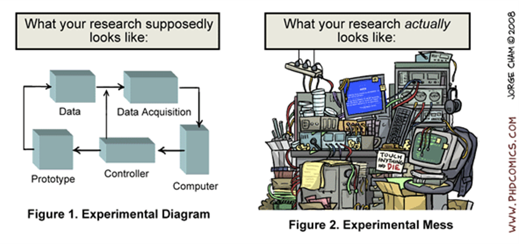Research Diagram vs. Research Reality. Piled Higher and Deeper
by Jorge Cham www.phdcomics.com
2.1 Learning objectives
- What is meant by reproducible quantitative research and why does it matters?
- What should be documented for ensuring the reproducibility of quantitative analyses?
- What software tools are available to support reproducible quantitative research?
2.2 Reproducibility
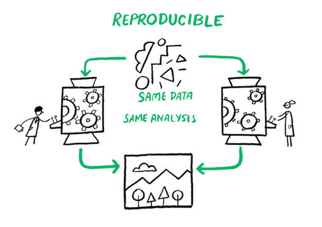This image was created by Scriberia for The Turing Way community and is used under a CC-BY licence. DOI: 10.5281/zenodo.3332807 (The Turing Way Community 2022).
2.3 Replicability
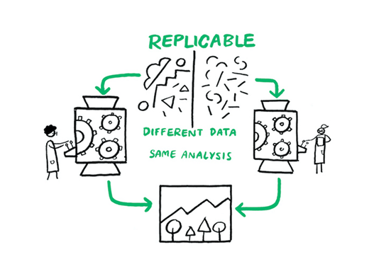This image was created by Scriberia for The Turing Way community and is used under a CC-BY licence. DOI: 10.5281/zenodo.3332807
2.4 Robustness
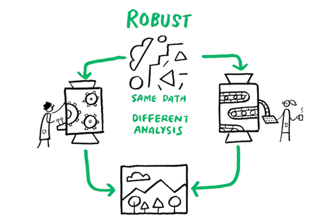This image was created by Scriberia for The Turing Way community and is used under a CC-BY licence. DOI: 10.5281/zenodo.3332807
2.5 Generalisability
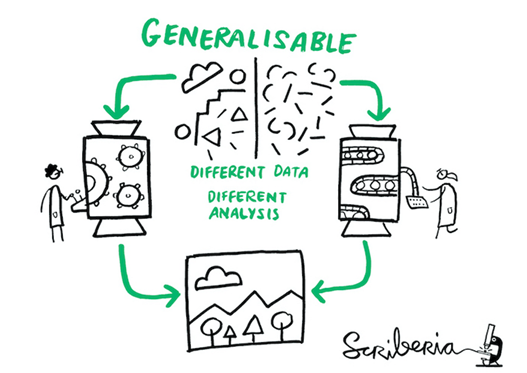This image was created by Scriberia for The Turing Way community and is used under a CC-BY licence. DOI: 10.5281/zenodo.3332807
2.6 Documentation for reproducible analyses

This image was adapted from an original image created by Scriberia for The Turing Way community (CC-BY licence. DOI: 10.5281/zenodo.3332807).
💬 Discussion
How do you think reproducible quantitative analyses can improve your research?
🕒 2 minutes
2.7 Opportunities
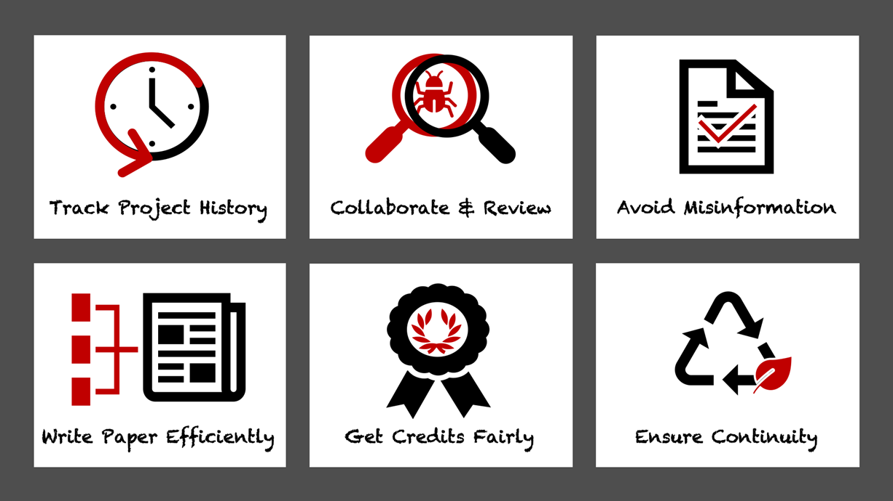This image was created by Scriberia for The Turing Way community and is used under a CC-BY licence. DOI: 10.5281/zenodo.3332807
💬 Discussion
Recent investigations have shown that a significant percentage of scientific studies cannot be reproduced, thus contributing to growing mistrust in scientific results (Baker 2016; Harris et al. 2018).
- Are you surprised by these findings?
- What barriers to reproducible research do you see in your daily practice?
🕒 3 minutes
2.8 ➖ Barriers
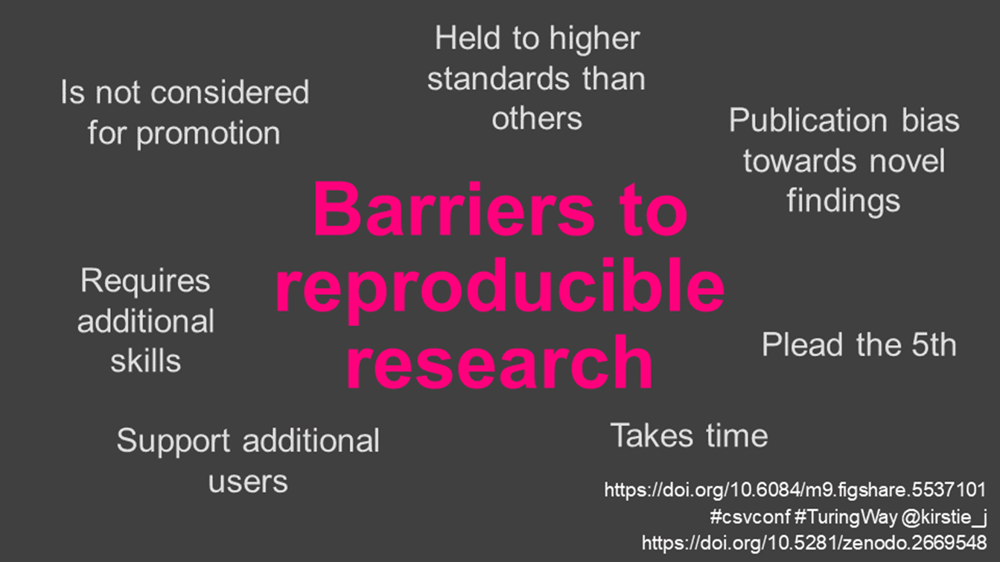2.9 Challenges
In practice, reproducibility is challenging, even for trained data scientists equipped with an arsenal of software tools.
Quantitative analyses can often not be fully reproduced because of complexities in how software tools are packaged, installed, and executed and because of limitations associated with how scientists document analysis steps.
2.10 Software tools across the research data lifecycle

This image was adapted from an original image created by Scriberia for The Turing Way community (CC-BY licence. DOI: 10.5281/zenodo.3332807).
2.11 Tools
In this workshop, you will be introduced to following software tools that will help make your quantitative data processing, study and analysis more reproducible.
The ecosystem around R provides an interactive environment for data science science workflows, thus making R is a great start for your data science journey.
In practice, most data scientists use a mix of languages, often at least R and Python. You will be slightly exposed to R, but the goal of this workshop is to introduce you to the concepts rather than teaching you the basics of R.
2.12 Git/GitHub
Keep track of various versions of your code, share your code and collaborate with others on code development

2.13 R and RStudio
R: Programming language for statistical computing and graphics and one of main programming language used for data science (with other programming languages such as Python and Julia).
Rstudio: integrated development environment (IDE) for R that enables an easier use of R.
2.14 Quarto
Generate (reproducible) dynamic reports to document your data analyses. We will use Quarto within the R/RStudio environment.
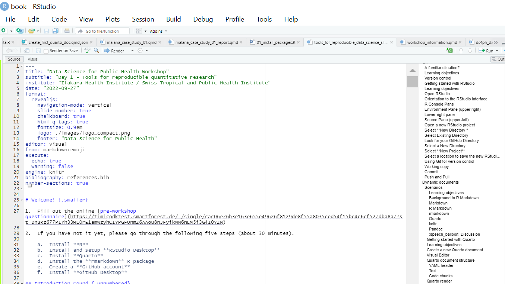2.15 Learning objectives for Day 1
- What is meant by reproducible quantitative research and why does it matters?
- How to do version control, code sharing and collaboration with GitHub?
- How to organise your research projects with R/RStudio?
- How to generate dynamic documents?
- How to create basic dynamic documents using R, Stata or Python?
2.16 Schedule Day 1 - Morning
| Time | Session |
|---|---|
| 09.00 - 09.15 | Introduction to data science tools Overview of objectives for Day 1 |
| 09.15 - 10.15 | Version control with Git |
| 10.15 - 10.45 | 🍵 ☕ Break |
| 10.45 -11.45 | Introduction to dynamic documents and Quarto |
| 11.45 - 12.15 | Use Quarto with Stata |
| 12.15 - 13.15 | 🍴 Lunch break |
2.17 Schedule Day 1 - Afternoon
| Time | Session |
|---|---|
| 12.15 - 13.15 | 🍴 Lunch break |
| 13.15 - 14.00 | Import external data |
| 14.00 - 15.00 | Manipulate data |
| 15.00 - 15.30 | 🍵 ☕ Break |
| 15.30 - 16.15 | Visualise data |
| 16.15 - 17.00 | Share code and collaborate with Git |
2.18 What about qualitative research?
Note
Although qualitative research contributes as significantly as quantitative research to knowledge generation, the validation of qualitative research findings is a much more complex and debated concept as qualitative analysis is by essence subjective and contextual. This explains the lower availability of software tools dedicated to qualitative research compared to what is available for quantitative research.
…
3 Git
👩🏫 Hélène
3.1 A familiar situation?
Does the following situation seem familiar? What challenges do you see in this situation?

Piled Higher and Deeper
by Jorge Cham www.phdcomics.com
3.2 Learning objectives
In this chapter, we introduce the basic elements of version control. We will learn the terminology and practice version control on a need-to-know basis across the workshop.
- What is version control?
- What tools are available to support version control?
- How to set up Git version control for a project?
3.3 Version control
Process by which the development of a document is clearly identified.
It provides huge benefits to organization, archiving, and being able to find your files easily when you need them.
Version control generally applies at a level of a project. It tracks and manages different drafts and versions for each document in the project.
Important
With version control, you will only see a single file, which is the most recent version (final version). This helps avoiding confusion.
This image was created by Scriberia for The Turing Way community and is used under a CC-BY licence. DOI: 10.5281/zenodo.3332807
3.4 Open GitHub Desktop
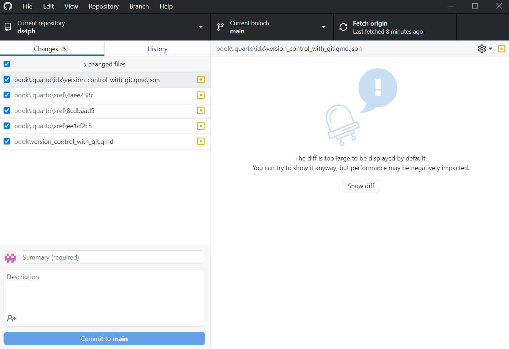3.5 Create a new Git repository
In GitHub Desktop, you can create a new repository by selecting File > New repository.
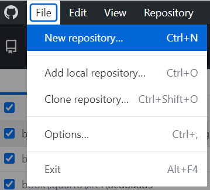4 Getting started with RStudio
👨🏫 Samwel
Please review the following sections for instructions on installation steps:
4.1 Learning objectives
- Familiarise with RStudio
- Create a new RStudio project
4.2 Open RStudio
Open RStudio
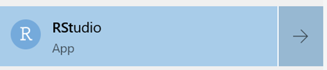4.3 Orientation to the RStudio interface
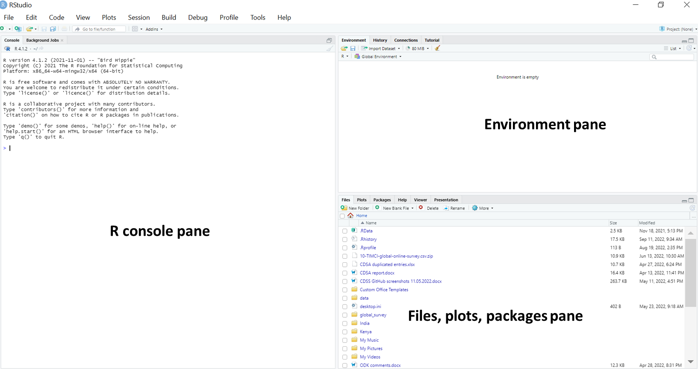4.4 R Console Pane
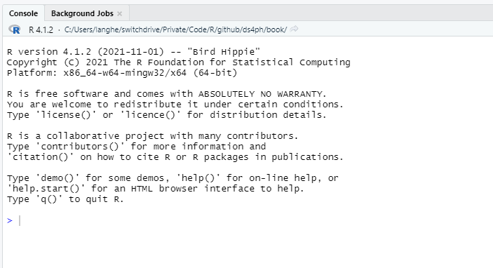Tip
This pane is similar to the Stata Command and the Results windows.
4.5 Environment Pane (upper right)
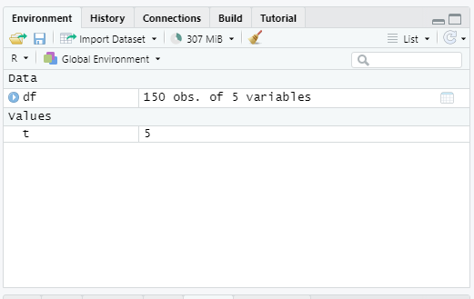Tip
This pane is similar to the Stata Variables Manager window.
4.6 Lower-right pane
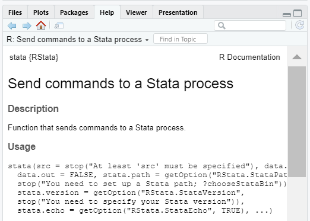Tip
This pane contains the Stata equivalents of the Plots Manager and Project Manager windows.
4.7 Source Pane (upper-left)
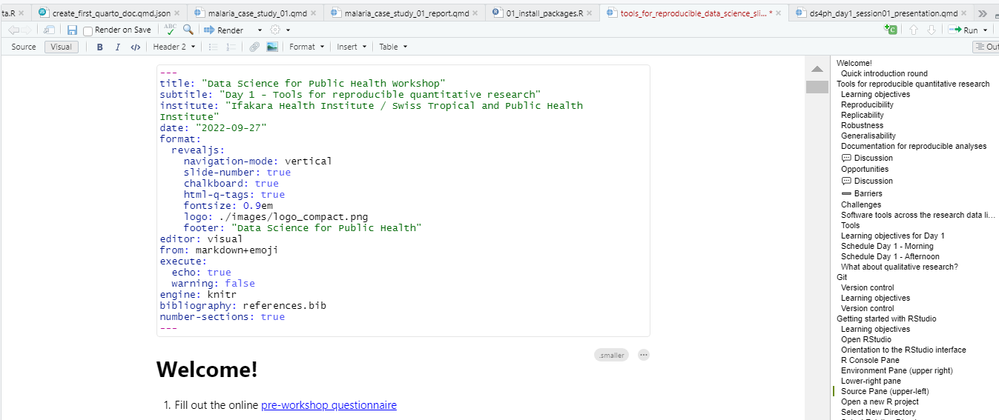Tip
This pane is similar to the Stata Do-file and Data Editor windows.
4.8 Open a new RStudio project
In RStudio, you can create a new project by selecting
File > New Project…
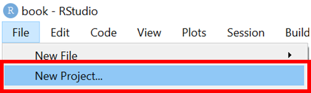4.9 Select Existing Directory
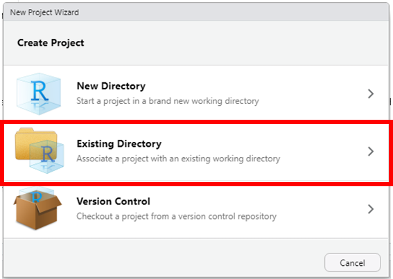4.10 Look for your GitHub Directory
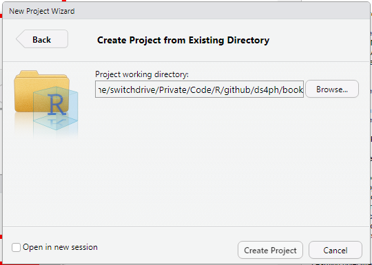4.11 Select a New Directory
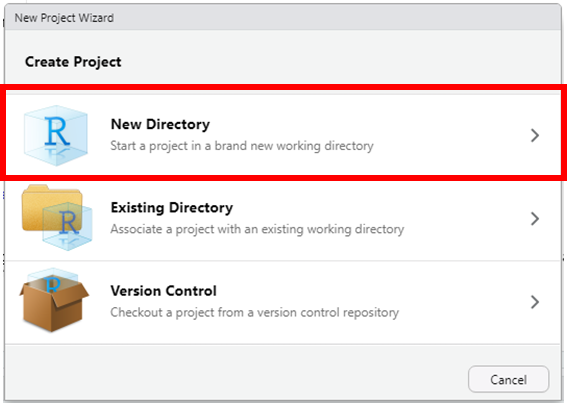4.12 Select New Project

4.13 Select a location to save the new RStudio project
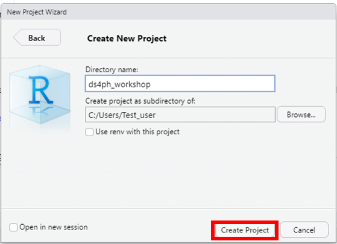We will use this RStudio project for the duration of the workshop.
Save all files created during this workshop into your RStudio project.
5 Using Git for version control
👩🏫 Hélène
5.1 Working copy
Version control uses a working copy where you do your work.
Note
You can update your working copy to incorporate any new edits or versions that have been added to the repository since the last time you updated.
You make arbitrary edits to this copy, without affecting your teammates. When you are happy with your edits, you commit your changes to a repository.
5.2 Commit
Snapshot of your entire repository at a specific time.
Over time, commits should tell a story of the history of your repository and how it came to be the way that it currently is.
Commits include lots of metadata in addition to the contents and message, like the author, timestamp, and more.
It also requires that you write something human-readable that will be a breadcrumb for you in the future. be easy to compare versions, and you can easily revert to previous versions.
5.3 Push and Pull
6 Dynamic documents
👩🏫 Hélène
The final product of a quantitative research is often a report, i.e. a textual description of your research findings along with figures and tables resulting from your analysis.
Based on this data, you discuss findings and give recommendations while using the data as evidence that backs up your discussion.
Discussion
Can you give examples of reports you produce as part of your research?
🕒 1 minutes
Scenarios
Discuss the following situations:
- you are informed that you were given the wrong data set just when you have finalised your article for submission to a journal. You are sent a new one and you are asked to run the same analysis with this new data set.
- you realize that a mistake was made and need to re-examine the code, fix the error, and re-run the analysis.
- Someone you are training wants to see the code and be able to reproduce the results to learn about your approach
🕒 3 minutes
Situations like the ones just described are actually quite common for a data scientist.
It is actually possible to keep your data science projects organized with RStudio so that re-running an analysis and recreating reports is straightforward and can be done with minimal effort.
Dynamic documents can be produced to update on a routine basis (e.g. daily surveillance reports) and/or run on subsets of data (e.g. reports for each research project, study).
6.1 Learning objectives
- What is a dynamic report?
- What is Quarto?
- Think about why you want to use Quarto
6.2 Background to R Quarto
Quarto documents enable code and textual descriptions to be combined into the same document, and the figures and tables produced by the code are automatically added to the document.
A paper published with an included quarto file and data sets can be reproduced by anyone with a computer.
Quarto integrates code and natural language in a way that is called literate programming
(Knuth 1984).
6.3 Markdown
Markdown is a language
that allows you to write a document using plain text, that can be converted to html and other formats. It is not specific to R.
Markdown files have a md extension.
6.4 R Markdown
It is a variation on markdown that is specific to R - it allows you to write a document using markdown to produce text and to embed R code and display their outputs. which was a variant of Markdown specifically designed to allow R code chunks to be included.
R Markdown is a widely-used tool for creating automated, reproducible, and share-worthy outputs, such as reports. It can generate static or interactive outputs, in Word, pdf, html, powerpoint, and other formats.
R Markdown files have .Rmd extension.
6.5 rmarkdown
It is the R package: This is used by R to render the .Rmd file into the desired output.
6.6 Quarto
Quarto is the successor to R Markdown. As a R Markdown document, a Quarto document intersperces code and text such that the script actually becomes your output document.
You can create an entire formatted document, including narrative text (can be dynamic to change based on your data), tables, figures, bullets/numbers, bibliographies, etc.
Quarto files have a .Qmd extension.
Quarto uses a mark-up language similar to HyperText Markup Language (HTML) or LaTeX, in comparison to a What You See Is What You Get
(WYSIWYG) language, such as Microsoft Word. A visual editor option can also be used which hides the need for the user to do this mark-up themselves.
Quarto is not tied to the R language. We can use Python, Julia and other programming languages as well.
6.7 knitr
This R package will read the code chunks, execute it, and knit
it back into the document. This is how tables and graphs are included alongside the text.
6.8 Pandoc
Pandoc actually convert the output into word/pdf/powerpoint etc. It is a software separate from R but is installed automatically with RStudio.
6.9 Quarto document generation
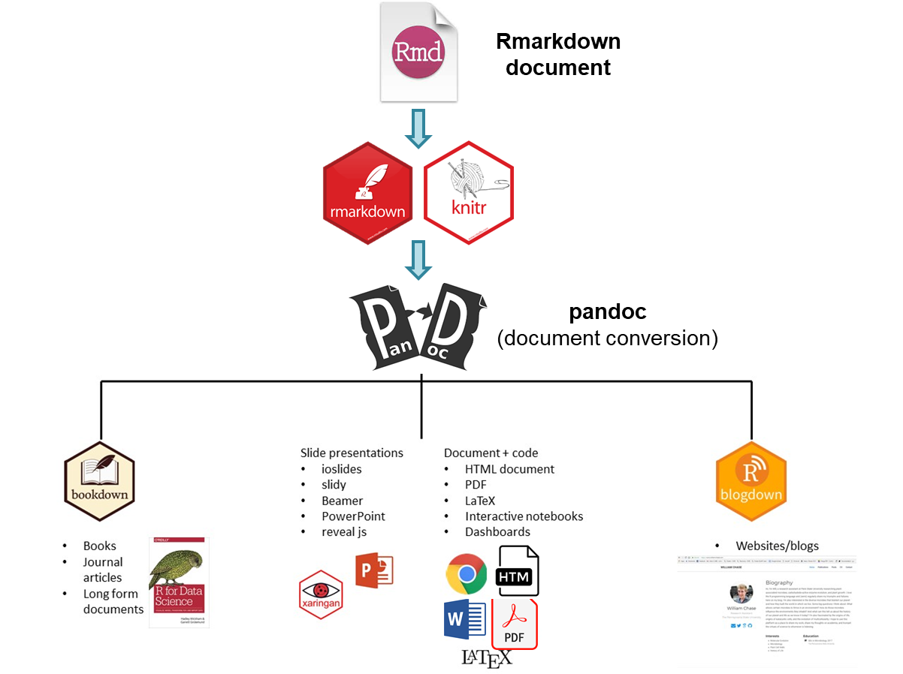Discussion
Form small groups of 2-4 with your neighbours and discuss how you expect learning Quarto might benefit you?
🕒 3 minutes
7 Getting started with Quarto
Please review the following sections for instructions on installation steps:
7.1 Learning objectives
- Learn how to use Quarto
7.2 Create a new Quarto document
In RStudio, you can create a new Quarto document by selecting File > New File > Quarto Document…
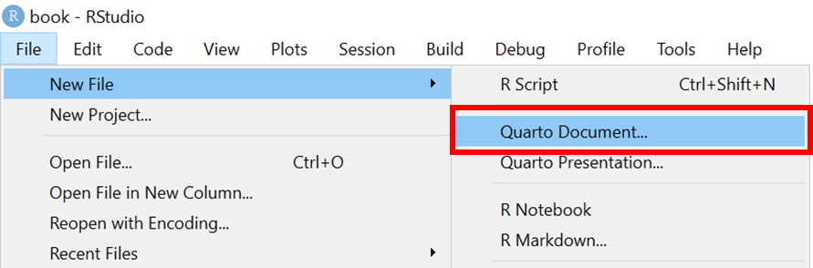7.3 Template
When you create a new Quarto document, RStudio tries to be helpful by allowing you to select a template which explains the different section of an R Markdown script. R Studio will enable you select options to pick from to generate a template Quarto document to start from.
The title and the author names are not important. If the output document type you want is not one of these, do not worry - you can just pick any one and change it later.
Let us select HTML to create an html document.
Click on create to open up a new Quarto (.Qmd) document.
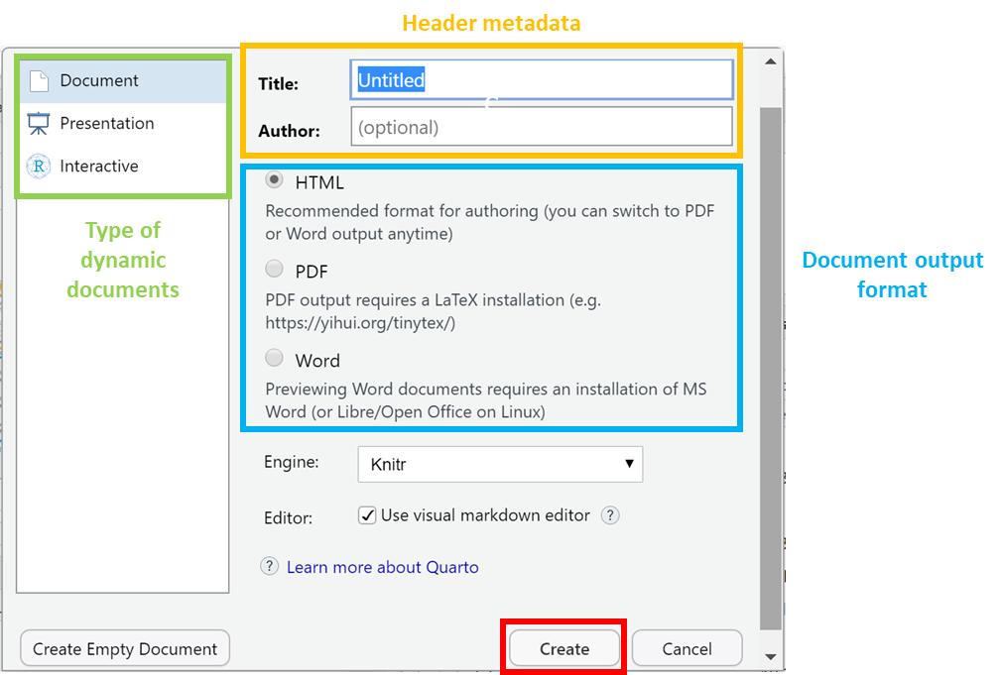7.4 Visual Editor
The RStudio Visual Editor is quite new and has features that improve your writing experience. Working in the Visual Editor feels a bit like working in a Google Doc.
Here’s an example showing the same file in the original Source Editor with content in markdown format and in the Visual Editor with content that looks more like it will appear in a live site. You can switch freely between these modes.
7.5 Quarto document structure
An R Markdown document can be edited in RStudio.
There are three basic components to a Quarto document, similar to the components of a R Markdown document:
- metadata (YAML header)
- text (markdown formatting)
- code (R code formatting)
The very top of the document consists of a (YAML) header surrounded by — lines. Here you may want to edit the title of your document. The other settings in the header define the default document type produced (Microsoft Word) when the RMarkdown is knit
. the information intended to produce an html output.
In WHITE background areas, any text will appear as regular text in the final report. Can have formatting such as headings, italics, bold, numbers, and bullets. See the second page of this RMarkdown cheatsheet for more detail. Can display parameters derived from your data via in-line code (such as epi week of the outbreak peak, as in the example above).
In gray background code chunks
, RMarkdown is running R commands. These commands perform data processing and cleaning steps, or could produce visual outputs in the document.
7.6 Quarto render
When you click the Render button a document will be generated that includes both content and the output of embedded code.
## Code options
You can embed code like this:
You can add options to executable code like this
| Sepal.Length | Sepal.Width | Petal.Length | Petal.Width | Species |
|---|---|---|---|---|
| 5.1 | 3.5 | 1.4 | 0.2 | setosa |
| 4.9 | 3.0 | 1.4 | 0.2 | setosa |
| 4.7 | 3.2 | 1.3 | 0.2 | setosa |
| 4.6 | 3.1 | 1.5 | 0.2 | setosa |
| 5.0 | 3.6 | 1.4 | 0.2 | setosa |
The echo: false option disables the printing of code (only output is displayed).
8 Code chunks in Quarto
8.1 Introduction
As the number of programming languages used for scientific discourse is very broad, Quarto was developed to be multilingual, beginning with R, Python, Javascript, and Julia. building on the RStudio (R) and Jupyter (Python, Julia) ecosystems which are very popular.
In this section, we will see how to use and mix R, Stata and Python within Quarto so that you can make the most out of it.
8.2 Create code chunks
Tip
- Use backticks
- Click on icon
- Keyboard shortcut
Ctrl+Alt+I
8.3 R code chunks
Note
A data frame is a two-dimensional array-like structure that contains rows and columns.
To store the content of the iris data set in data frame df, you can use = (equal) but good practice recommend using <- (back arrow) to indicate the direction of your allocation.
How to display data
| Sepal.Length | Sepal.Width | Petal.Length | Petal.Width | Species |
|---|---|---|---|---|
| 5.1 | 3.5 | 1.4 | 0.2 | setosa |
| 4.9 | 3.0 | 1.4 | 0.2 | setosa |
| 4.7 | 3.2 | 1.3 | 0.2 | setosa |
| 4.6 | 3.1 | 1.5 | 0.2 | setosa |
| 5.0 | 3.6 | 1.4 | 0.2 | setosa |
| 5.4 | 3.9 | 1.7 | 0.4 | setosa |
| 4.6 | 3.4 | 1.4 | 0.3 | setosa |
| 5.0 | 3.4 | 1.5 | 0.2 | setosa |
| 4.4 | 2.9 | 1.4 | 0.2 | setosa |
| 4.9 | 3.1 | 1.5 | 0.1 | setosa |
The pipe operator
| Sepal.Length | Sepal.Width | Petal.Length | Petal.Width | Species |
|---|---|---|---|---|
| 5.1 | 3.5 | 1.4 | 0.2 | setosa |
| 4.9 | 3.0 | 1.4 | 0.2 | setosa |
| 4.7 | 3.2 | 1.3 | 0.2 | setosa |
| 4.6 | 3.1 | 1.5 | 0.2 | setosa |
| 5.0 | 3.6 | 1.4 | 0.2 | setosa |
| 5.4 | 3.9 | 1.7 | 0.4 | setosa |
| 4.6 | 3.4 | 1.4 | 0.3 | setosa |
| 5.0 | 3.4 | 1.5 | 0.2 | setosa |
| 4.4 | 2.9 | 1.4 | 0.2 | setosa |
| 4.9 | 3.1 | 1.5 | 0.1 | setosa |
You can cross-reference your table Table 1
| Sepal.Length | Sepal.Width | Petal.Length | Petal.Width | Species |
|---|---|---|---|---|
| 5.1 | 3.5 | 1.4 | 0.2 | setosa |
| 4.9 | 3.0 | 1.4 | 0.2 | setosa |
| 4.7 | 3.2 | 1.3 | 0.2 | setosa |
| 4.6 | 3.1 | 1.5 | 0.2 | setosa |
| 5.0 | 3.6 | 1.4 | 0.2 | setosa |
| 5.4 | 3.9 | 1.7 | 0.4 | setosa |
| 4.6 | 3.4 | 1.4 | 0.3 | setosa |
| 5.0 | 3.4 | 1.5 | 0.2 | setosa |
| 4.4 | 2.9 | 1.4 | 0.2 | setosa |
| 4.9 | 3.1 | 1.5 | 0.1 | setosa |
| 5.4 | 3.7 | 1.5 | 0.2 | setosa |
| 4.8 | 3.4 | 1.6 | 0.2 | setosa |
| 4.8 | 3.0 | 1.4 | 0.1 | setosa |
| 4.3 | 3.0 | 1.1 | 0.1 | setosa |
| 5.8 | 4.0 | 1.2 | 0.2 | setosa |
| 5.7 | 4.4 | 1.5 | 0.4 | setosa |
| 5.4 | 3.9 | 1.3 | 0.4 | setosa |
| 5.1 | 3.5 | 1.4 | 0.3 | setosa |
| 5.7 | 3.8 | 1.7 | 0.3 | setosa |
| 5.1 | 3.8 | 1.5 | 0.3 | setosa |
| 5.4 | 3.4 | 1.7 | 0.2 | setosa |
| 5.1 | 3.7 | 1.5 | 0.4 | setosa |
| 4.6 | 3.6 | 1.0 | 0.2 | setosa |
| 5.1 | 3.3 | 1.7 | 0.5 | setosa |
| 4.8 | 3.4 | 1.9 | 0.2 | setosa |
| 5.0 | 3.0 | 1.6 | 0.2 | setosa |
| 5.0 | 3.4 | 1.6 | 0.4 | setosa |
| 5.2 | 3.5 | 1.5 | 0.2 | setosa |
| 5.2 | 3.4 | 1.4 | 0.2 | setosa |
| 4.7 | 3.2 | 1.6 | 0.2 | setosa |
| 4.8 | 3.1 | 1.6 | 0.2 | setosa |
| 5.4 | 3.4 | 1.5 | 0.4 | setosa |
| 5.2 | 4.1 | 1.5 | 0.1 | setosa |
| 5.5 | 4.2 | 1.4 | 0.2 | setosa |
| 4.9 | 3.1 | 1.5 | 0.2 | setosa |
| 5.0 | 3.2 | 1.2 | 0.2 | setosa |
| 5.5 | 3.5 | 1.3 | 0.2 | setosa |
| 4.9 | 3.6 | 1.4 | 0.1 | setosa |
| 4.4 | 3.0 | 1.3 | 0.2 | setosa |
| 5.1 | 3.4 | 1.5 | 0.2 | setosa |
| 5.0 | 3.5 | 1.3 | 0.3 | setosa |
| 4.5 | 2.3 | 1.3 | 0.3 | setosa |
| 4.4 | 3.2 | 1.3 | 0.2 | setosa |
| 5.0 | 3.5 | 1.6 | 0.6 | setosa |
| 5.1 | 3.8 | 1.9 | 0.4 | setosa |
| 4.8 | 3.0 | 1.4 | 0.3 | setosa |
| 5.1 | 3.8 | 1.6 | 0.2 | setosa |
| 4.6 | 3.2 | 1.4 | 0.2 | setosa |
| 5.3 | 3.7 | 1.5 | 0.2 | setosa |
| 5.0 | 3.3 | 1.4 | 0.2 | setosa |
| 7.0 | 3.2 | 4.7 | 1.4 | versicolor |
| 6.4 | 3.2 | 4.5 | 1.5 | versicolor |
| 6.9 | 3.1 | 4.9 | 1.5 | versicolor |
| 5.5 | 2.3 | 4.0 | 1.3 | versicolor |
| 6.5 | 2.8 | 4.6 | 1.5 | versicolor |
| 5.7 | 2.8 | 4.5 | 1.3 | versicolor |
| 6.3 | 3.3 | 4.7 | 1.6 | versicolor |
| 4.9 | 2.4 | 3.3 | 1.0 | versicolor |
| 6.6 | 2.9 | 4.6 | 1.3 | versicolor |
| 5.2 | 2.7 | 3.9 | 1.4 | versicolor |
| 5.0 | 2.0 | 3.5 | 1.0 | versicolor |
| 5.9 | 3.0 | 4.2 | 1.5 | versicolor |
| 6.0 | 2.2 | 4.0 | 1.0 | versicolor |
| 6.1 | 2.9 | 4.7 | 1.4 | versicolor |
| 5.6 | 2.9 | 3.6 | 1.3 | versicolor |
| 6.7 | 3.1 | 4.4 | 1.4 | versicolor |
| 5.6 | 3.0 | 4.5 | 1.5 | versicolor |
| 5.8 | 2.7 | 4.1 | 1.0 | versicolor |
| 6.2 | 2.2 | 4.5 | 1.5 | versicolor |
| 5.6 | 2.5 | 3.9 | 1.1 | versicolor |
| 5.9 | 3.2 | 4.8 | 1.8 | versicolor |
| 6.1 | 2.8 | 4.0 | 1.3 | versicolor |
| 6.3 | 2.5 | 4.9 | 1.5 | versicolor |
| 6.1 | 2.8 | 4.7 | 1.2 | versicolor |
| 6.4 | 2.9 | 4.3 | 1.3 | versicolor |
| 6.6 | 3.0 | 4.4 | 1.4 | versicolor |
| 6.8 | 2.8 | 4.8 | 1.4 | versicolor |
| 6.7 | 3.0 | 5.0 | 1.7 | versicolor |
| 6.0 | 2.9 | 4.5 | 1.5 | versicolor |
| 5.7 | 2.6 | 3.5 | 1.0 | versicolor |
| 5.5 | 2.4 | 3.8 | 1.1 | versicolor |
| 5.5 | 2.4 | 3.7 | 1.0 | versicolor |
| 5.8 | 2.7 | 3.9 | 1.2 | versicolor |
| 6.0 | 2.7 | 5.1 | 1.6 | versicolor |
| 5.4 | 3.0 | 4.5 | 1.5 | versicolor |
| 6.0 | 3.4 | 4.5 | 1.6 | versicolor |
| 6.7 | 3.1 | 4.7 | 1.5 | versicolor |
| 6.3 | 2.3 | 4.4 | 1.3 | versicolor |
| 5.6 | 3.0 | 4.1 | 1.3 | versicolor |
| 5.5 | 2.5 | 4.0 | 1.3 | versicolor |
| 5.5 | 2.6 | 4.4 | 1.2 | versicolor |
| 6.1 | 3.0 | 4.6 | 1.4 | versicolor |
| 5.8 | 2.6 | 4.0 | 1.2 | versicolor |
| 5.0 | 2.3 | 3.3 | 1.0 | versicolor |
| 5.6 | 2.7 | 4.2 | 1.3 | versicolor |
| 5.7 | 3.0 | 4.2 | 1.2 | versicolor |
| 5.7 | 2.9 | 4.2 | 1.3 | versicolor |
| 6.2 | 2.9 | 4.3 | 1.3 | versicolor |
| 5.1 | 2.5 | 3.0 | 1.1 | versicolor |
| 5.7 | 2.8 | 4.1 | 1.3 | versicolor |
| 6.3 | 3.3 | 6.0 | 2.5 | virginica |
| 5.8 | 2.7 | 5.1 | 1.9 | virginica |
| 7.1 | 3.0 | 5.9 | 2.1 | virginica |
| 6.3 | 2.9 | 5.6 | 1.8 | virginica |
| 6.5 | 3.0 | 5.8 | 2.2 | virginica |
| 7.6 | 3.0 | 6.6 | 2.1 | virginica |
| 4.9 | 2.5 | 4.5 | 1.7 | virginica |
| 7.3 | 2.9 | 6.3 | 1.8 | virginica |
| 6.7 | 2.5 | 5.8 | 1.8 | virginica |
| 7.2 | 3.6 | 6.1 | 2.5 | virginica |
| 6.5 | 3.2 | 5.1 | 2.0 | virginica |
| 6.4 | 2.7 | 5.3 | 1.9 | virginica |
| 6.8 | 3.0 | 5.5 | 2.1 | virginica |
| 5.7 | 2.5 | 5.0 | 2.0 | virginica |
| 5.8 | 2.8 | 5.1 | 2.4 | virginica |
| 6.4 | 3.2 | 5.3 | 2.3 | virginica |
| 6.5 | 3.0 | 5.5 | 1.8 | virginica |
| 7.7 | 3.8 | 6.7 | 2.2 | virginica |
| 7.7 | 2.6 | 6.9 | 2.3 | virginica |
| 6.0 | 2.2 | 5.0 | 1.5 | virginica |
| 6.9 | 3.2 | 5.7 | 2.3 | virginica |
| 5.6 | 2.8 | 4.9 | 2.0 | virginica |
| 7.7 | 2.8 | 6.7 | 2.0 | virginica |
| 6.3 | 2.7 | 4.9 | 1.8 | virginica |
| 6.7 | 3.3 | 5.7 | 2.1 | virginica |
| 7.2 | 3.2 | 6.0 | 1.8 | virginica |
| 6.2 | 2.8 | 4.8 | 1.8 | virginica |
| 6.1 | 3.0 | 4.9 | 1.8 | virginica |
| 6.4 | 2.8 | 5.6 | 2.1 | virginica |
| 7.2 | 3.0 | 5.8 | 1.6 | virginica |
| 7.4 | 2.8 | 6.1 | 1.9 | virginica |
| 7.9 | 3.8 | 6.4 | 2.0 | virginica |
| 6.4 | 2.8 | 5.6 | 2.2 | virginica |
| 6.3 | 2.8 | 5.1 | 1.5 | virginica |
| 6.1 | 2.6 | 5.6 | 1.4 | virginica |
| 7.7 | 3.0 | 6.1 | 2.3 | virginica |
| 6.3 | 3.4 | 5.6 | 2.4 | virginica |
| 6.4 | 3.1 | 5.5 | 1.8 | virginica |
| 6.0 | 3.0 | 4.8 | 1.8 | virginica |
| 6.9 | 3.1 | 5.4 | 2.1 | virginica |
| 6.7 | 3.1 | 5.6 | 2.4 | virginica |
| 6.9 | 3.1 | 5.1 | 2.3 | virginica |
| 5.8 | 2.7 | 5.1 | 1.9 | virginica |
| 6.8 | 3.2 | 5.9 | 2.3 | virginica |
| 6.7 | 3.3 | 5.7 | 2.5 | virginica |
| 6.7 | 3.0 | 5.2 | 2.3 | virginica |
| 6.3 | 2.5 | 5.0 | 1.9 | virginica |
| 6.5 | 3.0 | 5.2 | 2.0 | virginica |
| 6.2 | 3.4 | 5.4 | 2.3 | virginica |
| 5.9 | 3.0 | 5.1 | 1.8 | virginica |
8.4 Execute Stata commands within R code chunks
Stata is not a language supported by Quarto. To use Stata within Quarto, you have to use the RStata R package, which is a simple R / Stata interface that enables you to:
- execute Stata commands (inline or from a
.dofile) from R; - pass a data frame to Stata;
- return Stata outputs (including modified data frames) to R.
8.4.1 Configure RStudio to execute Stata
8.4.1.1 Find your Stata binary path
The function chooseStataBin from the RStata library allows you to browse and set the path to your Stata binary executable.
When you run this code, you should normally get a path which is of the format: “C:\Program Files\Stata16\StataIC-64
“. Note that the .exe extension has been removed from this path. It is important that you keep the format as is, as otherwise your Stata engine will not be recognised.
8.4.1.2 Add your Stata binary path to your .Rprofile
The Stata binary path setting we just created is just for your current RStudio session and it will be lost once your RStudio is closed. To keep this setting each time you are using RStudio and avoid havin to reconfigure RStata each time you are restarting RStudio, let us add the Stata binary path as an option to .Rprofile, which is your user-specific R configuration file.
Usethis is a workflow package: it automates repetitive tasks that arise during project setup and development, both for R packages and non-package projects.
The function edit_r_profile from the usethis library allows to open your configuration file .Rprofile.
Add the following two lines in the Rprofile file that you have just opened:
- options(
RStata.StataPath
= …) - options(
RStata.StataVersion
= …)
You need to indicate the path to your Stata binary executable in the RStata.StataPath option (e.g., “C:\Program Files\Stata16\StataIC-64
“) and the version of your Stata (e.g., 16) in the RStata.StataVersion option.
after indicating the path and version your code should look as specified below
- options(
RStata.StataPath
= “C:\Program Files (x86)\Stata15\Stata-64
“) - options(
RStata.StataVersion
= 15)
Once you are done, save and close your .Rprofile.
8.5 Python code chunks
Warning
This section is for (advanced) Python/R Markdown users only
You still need to import the R package reticulate if you want to use the Knitr engine and manipulate Python objects within R code chunks.
8.5.1 Call R objects in Python code chunks
R objects can be manipulated in Python code chunks by referring to them as r.
8.5.2 Call Python objects in R code chunks
Python objects can be manipulated in R code chunks by referring to them as py$
9 Version control with Git
10 import_data
11 Manipulate_data
12 share_and_collaborate_with_git
13 References
- The Epidemiologist R Handbook (https://epirhandbook.com)
Data Science for Public Health
Baker, Monya. 2016. “1,500 Scientists Lift the Lid on Reproducibility.” Nature 533: 452–54. https://doi.org/https://doi.org/10.1038/533452a.
Harris, Jenine K., Kimberly J. Johnson, Bobbi J. Carothers, Todd B. Combs, Douglas A. Luke, and Xiaoyan Wang. 2018. “Use of Reproducible Research Practices in Public Health: A Survey of Public Health Analysts.” PLOS ONE 13 (9): 1–12. https://doi.org/10.1371/journal.pone.0202447.
Knuth, Donald E. 1984. “Literate Programming.” The Computer Journal 27 (2): 97–111. https://doi.org/10.1093/comjnl/27.2.97.
The Turing Way Community. 2022. The Turing Way: A handbook for reproducible, ethical and collaborative research (version 1.0.2). Zenodo. https://doi.org/10.5281/zenodo.6909298.